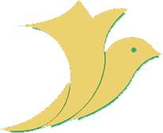
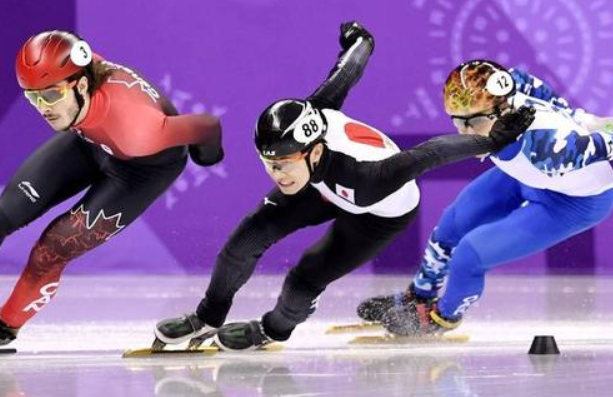
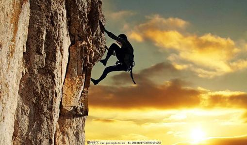
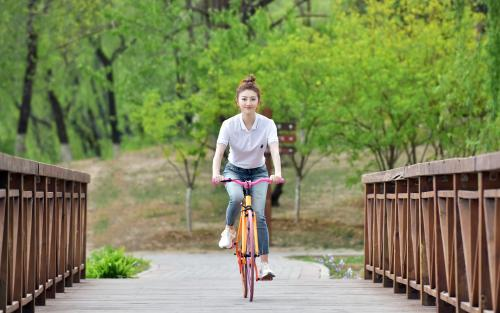
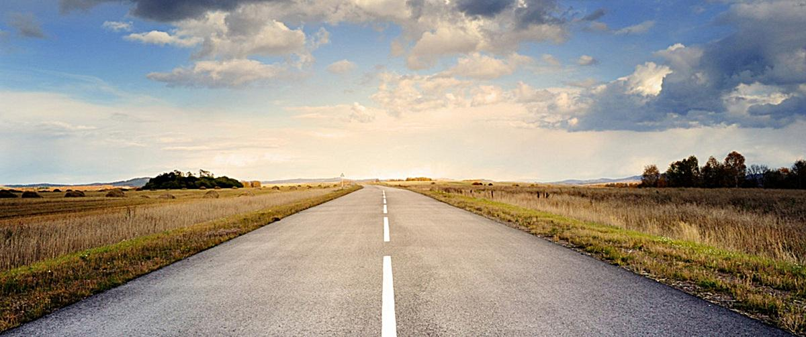

<!--
  Generated template for the SyrHome1Page page.

  See http://ionicframework.com/docs/components/#navigation for more info on
  Ionic pages and navigation.
-->
<ion-content>
  <div class="box1">
      <!-- <div class="box1-1"></div> -->
      <div class="box1-2" (click)="gosub5()">
        <i class="iconfont" style="color:grey">&#xe674;</i>
        <input type="text" placeholder="瘦身攻略" style="background-color:white;"/>
      </div>
    </div>
    <div class="box2">
      <!--  -->
      <ion-slides autoplay="1500" loop>
        <ion-slide>
            
        </ion-slide>
        <!-- <ion-slide>
            
        </ion-slide> -->
        <ion-slide>
            
        </ion-slide>
        <ion-slide>
            
        </ion-slide>
      </ion-slides>
    </div>
    <div class="box4">
      <ul class="yul1">
        <li (click)="gosub1()" class='li1'>
          <div class="box4-1"><i class="iconfont" style="color: white;font-size: 20px;">&#xe660;</i></div>
          <div class="box4-2"><span style="color:white;font-size: 15px;letter-spacing: 3px;">运动课程</span></div>
        </li>
        <li (click)="gosub2()" class="li2"> 
          <div class="box4-3"><i class="iconfont" style="color: white;font-size: 17px;">&#xe60d;</i></div>
          <div class="box4-4"><span style="color:white;font-size: 15px;letter-spacing: 3px;">为你推荐</span></div>
        </li>
      </ul>
    </div>
    <div class="box3">
      <span style="color:#4a69bb;font-size: 15px;letter-spacing: 3px;float: left">今日步数</span>
      <span style="color:#4a69bb;font-size: 10px; float: left;padding-top: 9px;padding-left: 5px;">Today's steps</span>
    </div>
    <div class="box5" style="border: 1px solid #2C2E47;height: 90px;width:332px;background-color: #2C2E47">
      <div class="pao" style="height: 75px;width:75px;background-color: #6124ED;border-radius: 120px;float: left;margin-left: 23px;margin-top: 6px;"><div style="margin-top:12px;margin-left: 14px;"><i class="iconfont" style="color:#ffeadb;font-size:47px;">&#xe661;</i></div></div> 
      <div class="bu"><span style="color:honeydew;float: left;font-size: 40px;margin-left: 40px;margin-top: 18px;">6872</span><span style="color:honeydew;float: left;font-size: 30px;margin-left: 18px;margin-top: 19px;">步</span></div>
    </div>
    <div>
      
    </div>
</ion-content>